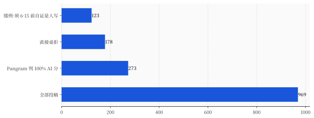
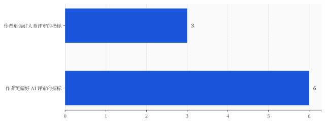

一、6 月 15 日：向一台机器证明「你是人」
先把 NeurIPS 这份通告里的数字摆清楚，因为每一个都长得像段子。
969 篇立场论文，Pangram 这个检测器给出的结果是：70.5% 的论文 AI 分超过 50%，28.2%（273 篇）直接顶到 100%。会议据此桌拒了 178 篇（占全赛道 18.4%），剩下 123 篇缓刑——6 月 15 日前自证清白，证不出来就一起拒。

这里得替 Pangram 说句公道话，免得你误会：所谓「100% AI 分」，不是说这篇论文 100% 的字都是 AI 敲的。它的官方解释是「文本里有大量段落存在实质性的 AI 使用」。这是个概率判断，不是逐字鉴定。
可问题恰恰出在这。一个连发明者都反复强调「别按字面理解」的概率分数，被一个顶级会议拿去当了桌拒的硬依据——过线就毙，不上诉。
更要命的是这条线本身会飘。同一批论文，检测窗口设宽一点，被标记的比例是 42.7%；窗口调细到 100 词，掉到 12.7%。一个作者完全看不见、也无从申辩的内部参数，往这边拨一下还是那边拨一下，决定了三成论文是「学术造假」还是「正常写作」。
被误伤的人已经站出来了。爱丁堡大学的 Pasquale Minervini 说，他那篇主要是人写的稿子，因为爱用破折号（em-dash）这类标点习惯，被检测器推高了 AI 分。破折号定罪，听着荒诞，但在一个把概率当判决的系统里，它就是会发生。
所以你看，连裁判主席自己的论文都能扫出 24%–69%，连一个破折号都能定罪——既然这台机器这么不靠谱，NeurIPS 为什么明知如此，还非要硬上？
答案不在机器这一头。在人那一头。
二、人那一头，早就空了
同行评审这东西，本质是一笔「义务劳动」。
你投一篇论文，由几个同行专家免费、匿名地替你把关——看方法对不对、数据靠不靠谱、结论站不站得住。没有报酬，不算工分，纯靠「学术共同体」这点情怀续命。它能转三百年，靠的是论文数量和审稿人数量大致匹配。
现在这个平衡被炸了。NeurIPS、ICLR、AAAI 这几个会，投稿量这几年集体冲到数万篇一届。论文翻着倍涨，免费审稿人就那么多，每个人手里压着十几二十篇，还都是本职工作之外的活。
人扛不住了，会怎么办？很简单，也用 AI。
ICML 今年就抓了个现行：因为违反它自己白纸黑字、且审稿人签过字的 LLM 使用规则，桌拒了大约 497 篇论文，背后牵出 398 名违规的「互惠审稿人」——一边给别人的论文写着 AI 生成的评审，一边自己的论文也在被 AI 审。
ICLR 那边的数字更直白。检测方 Pangram 估算，今年 ICLR 收到的评审意见里，约 21% 是完全由 AI 生成的，超过一半带有 AI 痕迹。也就是说，你熬了大半年的论文，递上去，给你写「意见」的那个「专家」，可能压根没读，是把你的稿子丢进模型、几秒钟生成了一段看着挺专业的话。
两头同时塌：作者用 AI 写论文，审稿人用 AI 写评审。一篇没人真正写的东西，被一份没人真正读的意见审判——中间那个「人类专家把关」的环节，被抽空了，只剩两台模型隔空对话。
会议主席们当然知道这事。他们的选择很有意思：既然挡不住人偷偷用 AI 审，那干脆，把 AI 摆到台面上，正式请它来当审稿人。
然后，最扎心的一幕发生了。
三、机器审得比人认真，这才是判决书
AAAI 是另一个顶级 AI 会。它今年没遮掩，直接官方下场：给主赛道全部 22,977 篇论文，每一篇都配了一份明确标注「这是 AI 写的」的 AI 评审。
效率是碾压级的。整个流程一天之内跑完，单篇成本不到 1 美元。一个人类审稿人读一篇论文得花几个钟头，AI 把两万多篇全审完，花的时间和钱，约等于人类喝顿下午茶。
但便宜和快，都不是重点。重点是会后那份覆盖 5,834 人的调查——作者、审稿人、领域主席都填了。结果是：大家不光觉得 AI 评审有用，而且在一系列关键维度上，作者更偏好 AI 给的评审，而不是人给的。
论文报告，在用来衡量评审质量的 9 项指标里，有 6 项，作者觉得 AI 比人类做得更好：揪技术错误、提出作者没想到的点、改进研究设计、整体的彻底程度……机器在这些事上，赢了人。

你得品一下这件事有多荒诞。
写论文的人，是这个星球上最懂 AI 的一群人。他们最清楚 AI 会胡编引用、会一本正经地说错话。可就是这群人，回过头来评价「谁审我的论文审得更走心」，投给了机器。
这不是 AI 太强了。这是一份对人类审稿人的判决书。
它说的是：人类专家那份免费的、匿名的、本就没人盯着的评审，长年累月已经敷衍到了一个地步——敷衍到一台会胡编的机器，只要肯老老实实把论文从头读到尾、逐条挑毛病，给出的东西就比那个心不在焉的真人更让作者满意。
机器没有变得更用心。是人，早就不用心了。AI 只是接管了一个本来就没人认真在干的活，然后顺手把这个真相，摊在了所有人面前。
四、当作者、审稿人和尺子，是同一个大脑
把镜头拉远一点，会看到一个更冷的画面。
科学这套体系能自我纠错，靠的是一个朴素假设：生产知识的人，和鉴定知识的人，是两拨独立的人、用独立的脑子。我写的我可能看不出错，但换个人来审，能审出来。这叫独立验证，是整个科学大厦的地基。
现在，这两拨人，正在变成同一类东西。
斯坦福那边搞了个叫 Agents4Science 的会，玩得最彻底：论文的主要作者是 AI，审稿人也是 AI——三个不同的大模型组队当审稿人，连引用和代码都让 AI 去核。AI 写、AI 审、AI 把关，闭环了。这套实验的结果，最后发在了《自然》子刊上。
连「用来测量 AI 的尺子」本身，都未必干净。专门做 AI 评测的机构 Epoch AI，6 月 12 日复盘了自家那套号称很硬的数学基准 FrontierMath，结果发现第二版里，原来的题目竟有 42% 存在「虽小但关键」的错误，修正了 135 道、删掉 12 道。也就是说，过去我们拿来给 AI 打分、排名、写进发布会 PPT 的那把尺子，自己先是歪的。
把这几件事叠在一起看：写论文的可以是 AI，审论文的可以是 AI，给 AI 打分的尺子本身也带错。当生产、鉴定、度量三道关都交给同一类大脑，那个「独立第三方来验一遍」的假设，就只是个假设了。它还在纸面上转，但已经空转。
这不是说 AI 不能进科学。AI 进来是必然，也确实能干活。问题是，我们正在不声不响地，把科学最值钱的那个零件——「独立验证」——给抽掉，然后假装它还在。
写在最后
回到 6 月 15 日那条死线。
它看着是个关于「AI 太多了、得管管」的故事。但你要是只看到这一层，就接住了那个最省事、也最不痛不痒的结论：哦，又是 AI 惹的祸，加强检测、严打代写就行了。
可这周这一连串事——NeurIPS 拿不准的检测器、ICML 抓出的互相 AI 审稿、AAAI 里作者宁可要机器评审——拼到一起，指向的根本不是「AI 入侵」。
同行评审崩的不是被 AI 入侵，是人类那一端，早就空了。
AI 没有抢走什么。它只是走到那个早就没人认真站岗的位置上，把活接了过来，顺便让所有人看清：这个岗，已经空了很久了。
那人在科学里，还剩下什么不能被外包？不是判断力——AI 能给出一份比你更彻底的判断。是署名，是担责。一份 AI 评审写得再到位，它也不会为这份评审签下自己的名字、在它错的时候承担后果。判断可以外包，责任不能。
所以，下次你做任何一件「替别人把关」的专业活——审一份稿、签一个字、批一个方案——也许值得问自己一句特别扫兴、但特别有用的话：
我这一步的「人类参与」，要是真和 AI 摆在一起比，赢得了吗？
如果赢不了，那它迟早会被接管。如果赢得了，赢的大概也不是因为你更聪明，而是因为你愿意，为它负责。